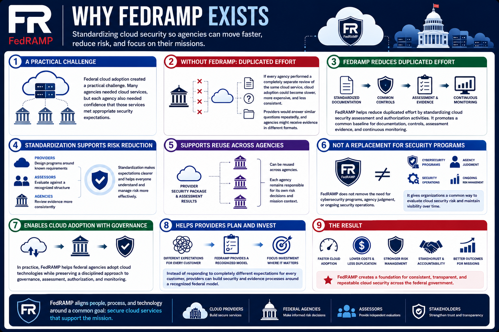

What Is FedRAMP?
Why FedRAMP Exists
Connecting to LMS... Progress: in progress
Version 1.0 | Date: 2026-06-16 | Educational overview of FedRAMP concepts.

Narration
FedRAMP exists because federal cloud adoption created a practical challenge. Many agencies needed cloud services, but each agency also needed confidence that those services met appropriate security expectations.
If every agency performed a completely separate review of the same cloud service, cloud adoption could become slower, more expensive, and less consistent. Providers would answer similar questions repeatedly, and agencies might receive evidence in different formats.
FedRAMP helps reduce duplicated effort by standardizing cloud security assessment and authorization activities. It promotes a common baseline for documentation, controls, assessment evidence, and continuous monitoring.
Standardization supports risk reduction because it makes expectations clearer. Cloud providers can design programs around known requirements, assessors can evaluate against a recognized structure, and agencies can review evidence more consistently.
FedRAMP also supports reuse. Security packages and assessment results can be reused across agencies, while each agency remains responsible for its own risk decisions and mission context.
The program does not remove the need for cybersecurity programs, agency judgment, or ongoing security operations. It gives organizations a common way to evaluate cloud security risk and maintain visibility over time.
In practice, FedRAMP helps federal agencies adopt cloud technologies while preserving a disciplined approach to governance, assessment, authorization, and monitoring.
This standardization also helps cloud providers plan their programs. Instead of responding to completely different expectations for every customer, providers can build security and evidence processes around a recognized federal model.